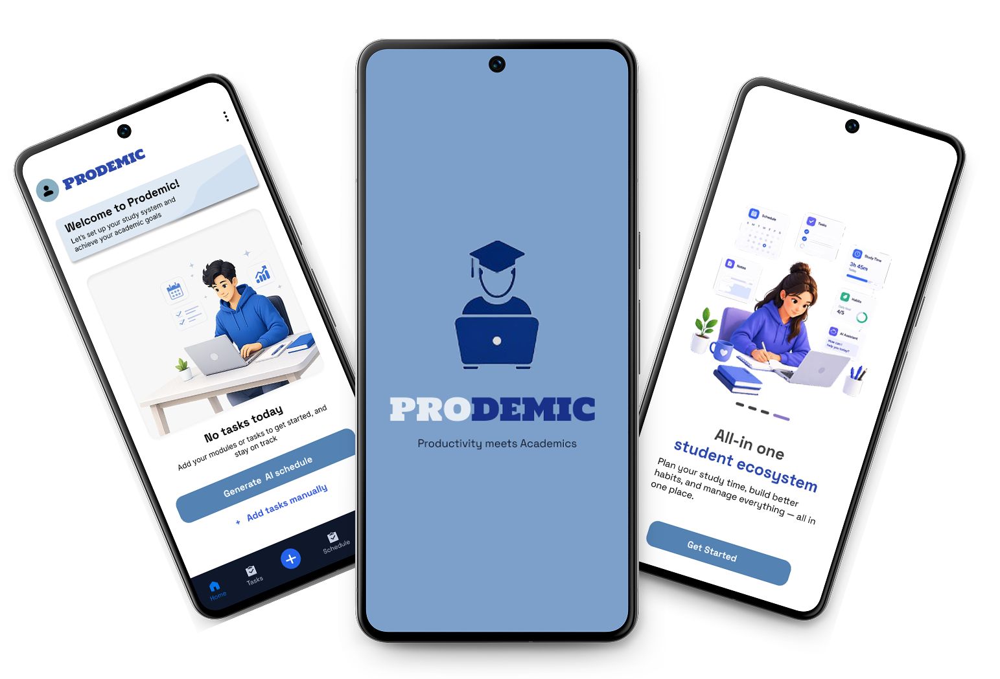
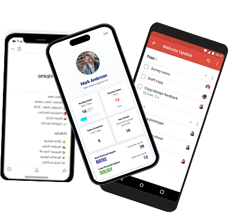
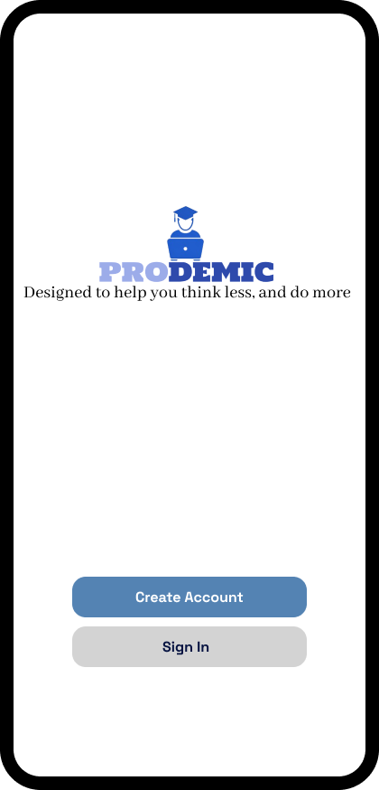

PRODEMIC
Making life easier for students, desinged to help students think less and do more

ROLE
UX/UI DESIGNER
TIMELINE
4 MONTHS
TOOLS
FIGMA, FIGJAM
PROJECT TYPE
UI DESIGN
01 About Project
Prodemic is a student productivity and academic planning application designed to help students effectively manage their academic goals. The project addresses common challenges such as tracking deadlines, organizing coursework, balancing workloads, and maintaining motivation throughout the academic term.
02 Problem Statement
Many students struggle to effectively manage assignments, deadlines, and commitments. Existing productuvity application often lack features specifically tailored to students, such as subject-based organization, academic calender intergration, study planning tools, and customization reminders, As a result, students may expereince missed deadlines, poor workload management, and increased academic stress.
03 Goals
Improve time management
Reduce academic stress
Build effective study methods
Support comsistant and academic progress
04 Design process
01
Research
Understand users and context
02
Empathise
Analyze and gain insights
03
Design
Ideate and create user solutions
04
Test
Validate and refine project
05 Competitor analysis

Key takeaways
- Most apps are either too generic or outdated
- Students need a mobile-first, subject-specific, and motivational experience
- There's an opportunity to combine smart reminders, academic structure, and habit support in one unified platform
Apps
Strengths
Weaknesses
Todoist
- Simple task management
- Smart scheduling
- Recurring reminders
- No subject-based organization
- Not tailored for academic tracking
Notion
- Highly customizable
- Supports databases and templates
- It has collaborative features
- Steep learning curve
- Lacks academic calender intergration
MyStudyLife
- Designed for students
- Includes class schedule
- Has assignment an exam tracking
- Outdates interface
- Limited customization and motivation features
06 User Personas
Age: 21
Occupation:Full-time University Student
School:University of Kwazulu-Natal
Year:3rd year psychology
Goals
- Build effective study methods
- Stay organized
- Meet deadlines
- Reduce stress
Needs
- Smart reminders
- Calender syncing
- Task maanagement
- Progress tracking
Fustrations
- Forgetting assignment deadlines
- Balance academi and personal life
- Struggling to stay motivated
- Feeling overwhelmed during exams
Behaviours
- Uses google calender
- Checks deadline daily
- Studies with schedules
- Uses mobile apps frequently
Age: 19
Occupation:Part-time student and Retail Assistant
School:UNISA
Year:2nd year Infomration systems
Goals
- Balance work and studies
- Submit assignments on time
- Improve academic performance
- Stay organized across all modules
Needs
- Assignment reminders
- Academic calender intergration
- Study planning tools
- Progress tracking
Fustrations
- Forgetting deadlines due to work shifts
- Managing multiple responsibilities
- Limited study time
- Feeling overwhelmed during busy periods such as test week
Behaviours
- Studies mostly at night
- Uses mobile apps to stay organized
- checks deadlines frequently
- CManually creates weekly study schedules
07 Final UI Screens
Introduction to app
.png)
.png)
.png)
.png)
The onboarding process introduces new users to the app's core features and demostrates gow Prodemic supports academic productivity
Authentification

.png)
.png)
.png)
The authentification flow provides a simple and secure way for students to create accounts, login, and access their personalised workspace
New user experience
.png)
.png)

.png)
New users can quickly set up their profiles and begin organizing their academic tasks and schedules
In-use experience
.png)
.png)
.png)
Students can manage deadlines, organise their academic schedules through intergrated caledner and task planning system.